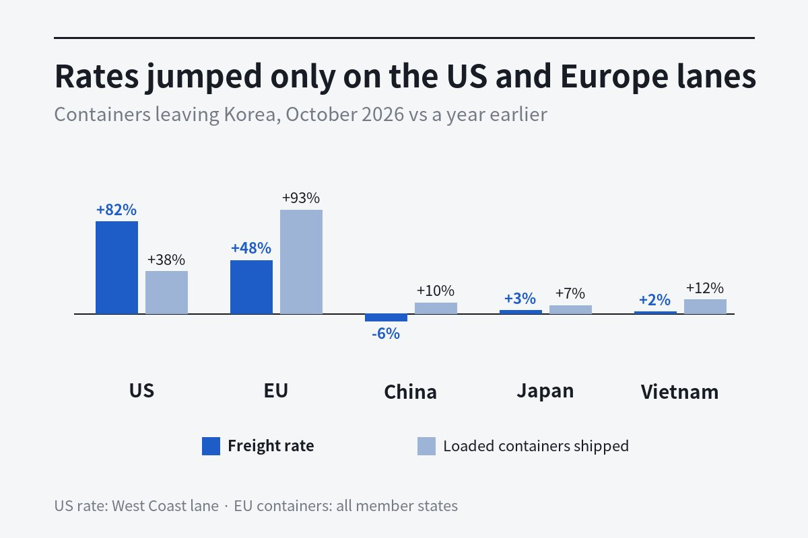
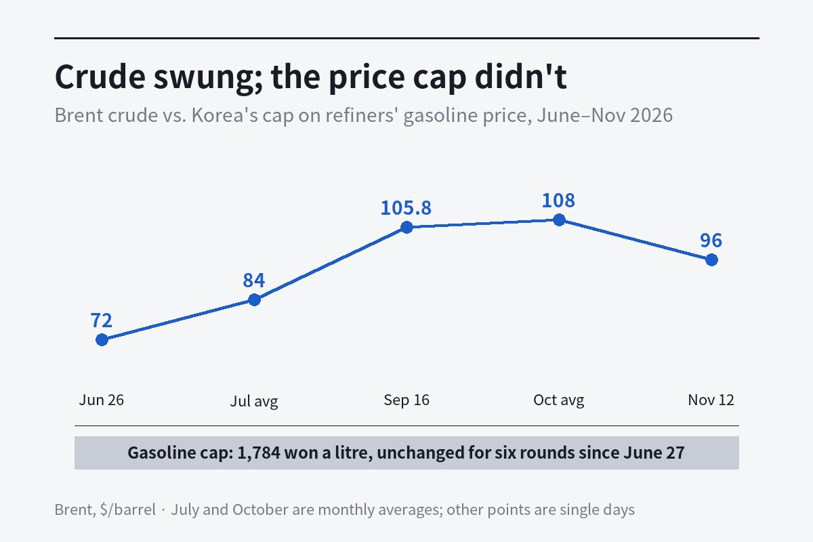
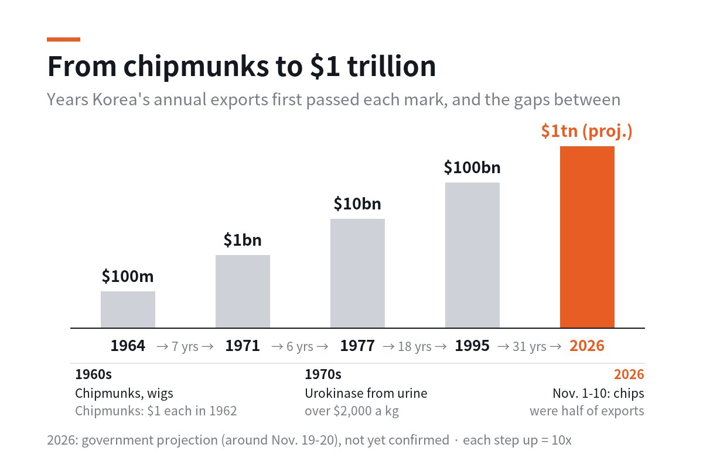
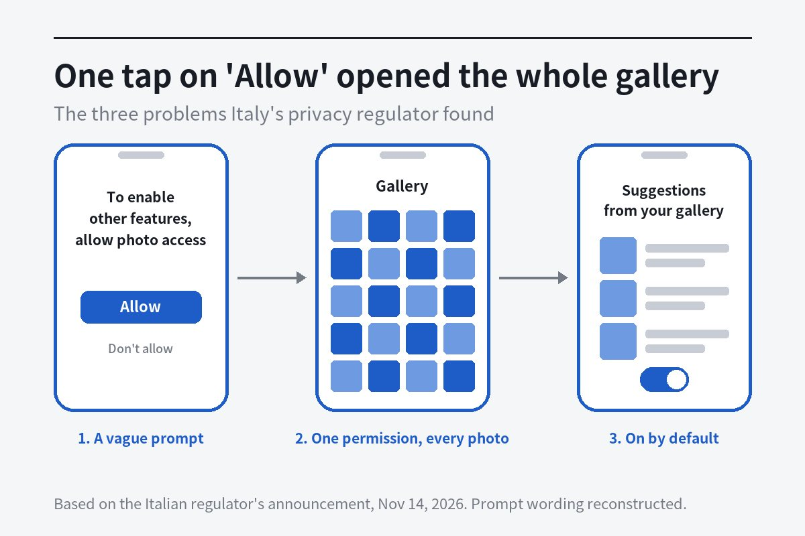

HOLT NEWS、韓国の経済と貿易
今日の経済：日本と韓国
グラフは直近1年の推移
韓国の貯蓄性保険、満期後3年まで年金に切り替え可能に 1億ウォンを超えて受け取るのは86歳半から
韓国の生命保険会社は12月1日から、年金転換特約が付いた貯蓄性保険について、満期保険金を受け取らずに置けば満期後3年まで年金への切り替えを受け付ける。金融監督院の例の月額を利息なしで足していくと、65歳の男性が10年保証の終身年金で1億ウォンを超えて受け取るのは86歳半になる。

韓国発の北米西岸向けコンテナ運賃、1年で82%上昇 日本向けはほぼ横ばい
11月1〜20日の韓国の輸出が前年の2倍になった日、船の側の数字を見ました。韓国関税庁の申告運賃で、10月の韓国発米国西岸向け40フィートコンテナ運賃は前年同月より82%、EU向けは48%上がりました。日本向けは2.9%、中国向けは6.3%下落でした。6〜10月に積まれて出たコンテナは米国向けが17%、EU向けが70%増えています。

韓国の輸入、11月1〜20日は39%増 増えた分の7割は半導体とエネルギー
韓国関税庁の速報値によると、11月1〜20日の輸入は503億ドルで、前年同期より142億ドル多くなりました。増えた分の69%は半導体、原油、ガス、半導体製造装置の4品目です。この4つを除くと輸入は17.6%増でした。日本からの輸入は36億1,000万ドルで27.0%増えています。

韓国の輸出、11月1〜20日は2倍に それでも今年運び出した荷物は軽くなった
韓国関税庁の速報値によると、11月1〜20日の輸出は774億ドルで前年の2倍になった。日本向けは21億5,000万ドルで40.2%増。ところが11月19日までに韓国が今年輸出した貨物の重さは、前年の同じ期間より4.9%少ない。

韓国、請求し忘れた医療保険金を探すサービスを来年開始へ 待つ間に3年の時効が来る受診も
韓国の金融委員会は、2027年1〜3月のうちにアプリ「実損24」へ未請求の保険金を探す機能を入れると発表した。ただ、実損医療保険の保険金は3年たつと請求できなくなる。サービスが始まる前に期限が切れる受診がある。いつの分までか、今すぐ自分で調べるにはどこを見ればよいかをまとめた。

韓国の輸入車、金額で中国製がドイツ製を抜く 日本製は8.8%減
2026年1〜10月に韓国が輸入した乗用車は、中国の工場で造られた車が42億2,000万ドルで、ドイツ製の41億9,000万ドルを上回った。中国製の92.0%は電気自動車。日本製は5億9,000万ドルで、前の年より8.8%少ない。

日本で500円のビッグマック、韓国では約622円、パキスタンでは約630円
エコノミスト誌の2026年7月のビッグマック指数で、ビッグマックはパキスタンが3.89ドル、韓国が3.84ドルとほぼ同じ値段だった。日本は500円、3.08ドルで、どちらよりも安い。所得と比べると、負担の重さはまるで違う。

韓国産石油製品、日本向けは量が3割減 1トン当たりの輸出額は8割高
韓国関税庁のデータから計算すると、2026年3〜10月に韓国から日本へ輸出された石油製品は333万トンで前年同期より30.3%減った一方、1トン当たりの平均輸出額は692ドルから1,259ドルへ81.9%上がった。韓国政府は3月からガソリン・軽油・灯油の輸出を前年同月の量までに抑えており、11月の輸出分から軽油に限り110%まで条件付きで緩めた。

韓国の古い医療保険、第5世代に乗り換えると3年間は半額 4年目から保険料は2倍に
11月23日から、2013年3月以前に加入した再加入条件のない韓国の実損医療保険は、第5世代に乗り換えると3年間、保険料が半分になる。割引が終わった後はいくらになるのか。古い保険を守るために毎年いくら余分に払うことになるのか。割引が打ち切られる条件は何か。計算してみた。

韓国産のり、日本向け価格が23%下落 輸出量はほぼ横ばい
韓国関税庁のデータから計算すると、2026年10月までの12カ月間、韓国から日本に輸出されたのり（乾のりなど食用海藻）は、重量が2.1%減にとどまる一方、1キロ当たりの価格が14.01ドルから10.83ドルへ22.7%下がり、輸出額は24.3%減った。一方、韓国のインスタントラーメンなど麺類の輸出は24.4%増の19億8,100万ドルで、日本向けも12.3%増えた。

日本で広がる「50年住宅ローン」、韓国はソウル圏で30年に上限
住宅金融支援機構の調査に答えた金融機関の半数超が、変動金利型の最長返済期間を50年としている。金融庁は2026年9月の金融行政方針で、こうしたローンが借り手の収入見通しに合っているかを注視するとした。韓国は逆に、2025年6月からソウル首都圏などで住宅ローンの期間を30年以内に制限している。同じ計算式で違いを比べた。

韓国スキンケアの輸出先、米国が中国を抜いて首位に 日本向けも14%増
韓国関税庁のデータから計算すると、2026年10月までの12カ月間、韓国のスキンケア製品の米国向け輸出は39.8%増の20億5,600万ドルとなり、2.5%減った中国向け（16億2,500万ドル）を上回った。日本向けは14.1%増の7億6,800万ドルで3位。ただ他の市場がそれ以上に伸びたため、輸出全体に占める日本の割合は8.0%から7.0%に下がった。

米国301条関税、日本と韓国は「合計12.5%」 ベトナム産はさらに12.5%上乗せ
米国は2026年7月24日から、数十の国・地域の製品に通商法301条の関税をかけている。日本産と韓国産は、通常の関税が12.5%に満たない品目で合計12.5%まで引き上げられるだけだが、ベトナム産とタイ産は通常の関税にさらに12.5%が上乗せされる。即席麺（通常関税6.4%）なら日本産・韓国産は12.5%、ベトナム産は18.9%になる。

原油は下がったのに、韓国のガソリン上限価格はなぜ動かないのか
韓国政府は精油会社がガソリンスタンドに卸すガソリンの上限価格を1リットル1784ウォン(約211円)に据え置いた。6回連続で、今回は12月11日まで。ブレント原油は10月平均より下がったが、6月末に上限を決めたときよりまだ3分の1ほど高い。上限を超えたコストはまず精油会社がかぶり、政府が四半期ごとにコストを基準に補塡すると約束している。

韓国の熱延鋼板輸入、日本産のシェアが65%に 中国産は反ダンピング関税で77%減
2026年1〜10月、韓国の日本産熱延鋼板の輸入は前年同期比13%増え、熱延輸入に占める日本産の比率は44%から65%に上がった。反ダンピング関税で中国産が77%減った穴を埋めた形だが、日本産の増加は最低価格の約束（価格約束）が始まった6月23日以降に集中している。台湾産は3.7倍、ベトナム産は8倍に増えた。

韓国の輸出、年1兆ドル目前 かつて日本にシマリスを売っていた国が日本の最高記録を超える
韓国の今年の輸出は11月10日までに9,637億ドルに達し、今のペースなら11月19〜20日ごろ1兆ドルを超える。実現すれば世界で4カ国目で、日本の過去最高（2011年の約7,900億ドル）を大きく上回る。1960年代には野生のシマリスをペットとして日本に売り、70年代には公衆トイレで集めた尿を薬の原料として輸出していた。二つの時代を税関データで比べた。

日本から韓国への船賃、逆方向の2.2倍に 米国発は4分の1以下
韓国関税庁が輸出入申告書をもとに公表する海上運賃では、2026年10月、40フィートコンテナを日本から韓国へ送る運賃は、韓国から日本へ送る運賃の2.2倍だった。1年前は1.6倍。日本から韓国の港に入るコンテナの41%は空なのに、日本発のほうが高い。一方、米国西海岸から韓国への運賃は逆方向のわずか24%だった。

「許可」を1回押しただけで8億500万ユーロ メタへの制裁金、なぜアイルランドではなくイタリアが
イタリアのデータ保護機関は11月14日、メタに8億500万ユーロ(約1,403億円)の制裁金を科した。Android版フェイスブックが、この機能だけの同意を取らずにイタリアの利用者の写真フォルダを読んでいたという判断だ。メタの欧州本部はアイルランドにあるのに、今回はイタリアが単独で動けた。同じことを韓国の法律に当てはめると、道は二つに分かれる。

韓国の会社員、月給300万ウォン(約35万5,000円)以上が初めて半数を超えた
月給500万ウォン(約59万円)以上の人も17.6%で、上半期の調査としては最も多かった。ただ、月給100万ウォンに届かない人も増えていて、業種による差は大きい。

Transshipment makes up 60% of Busan's Q3 container traffic, up 20% from a year earlier
Of the 6.77 million TEU handled at Busan in July–September, 60% was transshipment: other countries' cargo changing ships. Incheon's seaport mostly serves direct routes to nearby Asian ports. And by value, 55.8% of South Korea's exports left through airports in the 12 months to October.

The $25 minimum wage bill has two versions. Only the Senate's makes $25 a floor
The Living Wage For All Act, Democrats' $25 minimum wage bill, has House and Senate versions that are often treated as one. They aren't. The House text caps the wage at two-thirds of the median hourly wage, about $16 at today's median.

Missed Korea's earned income tax credit in May? You can still claim until Dec. 1, at 95%
South Korea's tax agency has written to 260,000 households that may qualify for work and child tax credits on their 2025 income but did not claim them. Late claims close Dec. 1 and pay 95% of the full amount. Here is how the credit is calculated, and what can shrink it.

Amazon and United block AI shopping agents as Walmart lets them buy
United, Amazon, JPMorgan and eBay are shutting out customers' AI agents; Walmart and Shopify are letting them in with limits. The split tracks two questions: who keeps the sale, and who pays when an agent buys the wrong thing.

Korea's wrap accounts have no legal single-stock cap, FSS warns, after a client ended up 90% in high-risk KOSDAQ shares
Korea's financial watchdog on Nov. 16 published complaints about brokerage wrap accounts, where clients hand stock-picking to the broker. Unlike mutual funds, these accounts have no legal single-stock limit, and exit fees and capital gains tax on overseas shares have caught some investors out.

Fed Financial Stability Report flags AI data center debt and off-balance-sheet commitments
The Federal Reserve's November 13 Financial Stability Report sets out how AI data centers are being financed. Debt issued for advanced computing passed $680 billion this year, and seven big tech firms have more than $3 trillion, undiscounted, in leases, guarantees and other commitments that sit off their balance sheets. Each figure measures something different.
データ: 財務省 · 日本銀行 · 韓国関税庁 · 韓国銀行 · 韓国統計庁 · 韓国輸出入銀行